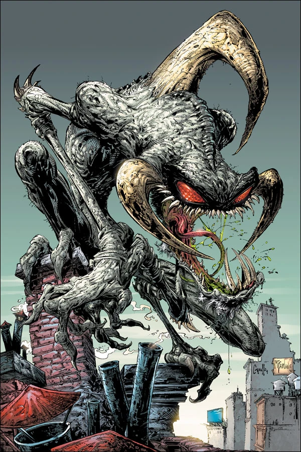
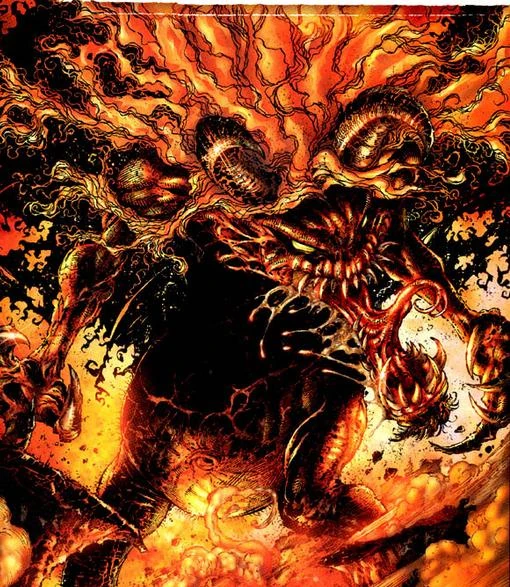
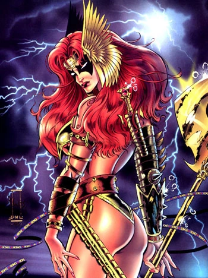
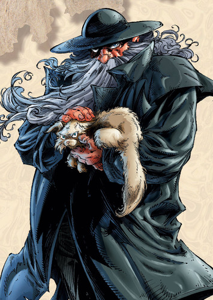
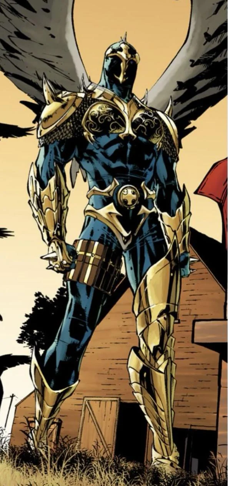
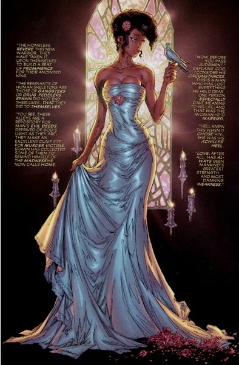
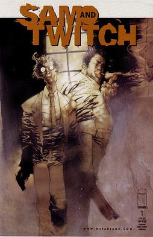

Spawn (Al Simmons)
A Pokol harcosa, egy tragikus hős, aki a saját múltjával és a sötétséggel küzd.

Clown / Violator
Gonosz bohóc alakban élő démon, Malebolgia hű szolgája, Spawn örök kísértője.

Malebolgia
A Pokol egyik nagyura, aki Spawn-t a Földre küldi, de saját céljai vezérlik.

Angela
Egy angyali vadász, aki Hellspawnokat öl – de idővel Spawn szövetségese lesz.

Cogliostro
Egy öreg, bölcs karakter, aki valaha maga is Hellspawn volt. Most segíti Al-t.

Overt-Kill
Kiborg zsoldos, akit azzal bíznak meg, hogy elpusztítsa Spawn-t. Sok erő, kevés ész.

Redeemer
Isten harcosa, a mennyei hadak bajnoka, Spawn természetes ellentéte.

Wanda Blake
Al Simmons felesége. Spawn minden fájdalmának forrása és reménye.

Sam & Twitch
Két detektív, akik gyakran kerülnek a természetfeletti események közelébe.